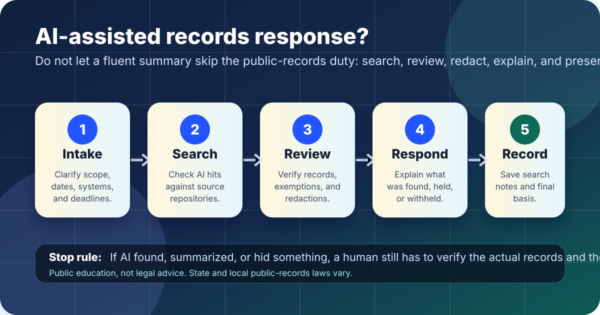

AI governance and public records
AI public records request checklist.
A practical review for AI-assisted search, summaries, redaction notes, response drafts, and disclosure logs before public-records work reaches a requester.
The short answer
AI can help sort request text, draft a search plan, summarize candidate records, or make a response letter easier to read. It should not decide by itself what counts as a responsive record, what may be withheld, what must be redacted, or what the agency can truthfully say it searched.
Before sending a response, a human records owner should check scope, search locations, record authenticity, exemptions or redactions, summaries, requester-facing explanations, appeal paths, and the final log. If the team cannot explain what was searched, what was found, what was withheld, and why, pause the response.

Why this review matters
FOIA.gov describes the federal Freedom of Information Act as a law giving the public the right to request access to federal agency records, with agency processing, exemptions, and appeal paths. The U.S. Department of Justice’s FOIA Guide collects legal and procedural guidance for federal FOIA administration. Many state and local public-records laws differ, so this page is a practical literacy tool rather than legal advice.
Public-records work also depends on records management. The National Archives and Records Administration describes records control schedules as instructions for how long records are kept and what happens to them after that period. NIST’s AI Risk Management Framework emphasizes governance, mapping, measurement, management, documentation, and accountable roles for AI risk. OMB Memorandum M-24-10 gives federal agencies direction for AI governance, innovation, and risk management, including attention to rights- and safety-impacting uses. The practical lesson is simple: AI may assist a records workflow, but it does not remove the public body’s duty to search carefully, protect lawful confidentiality, explain decisions, and keep an adequate record of what was done.
1. Minimum checks before responding
| Check | Question to answer | Evidence to keep |
|---|---|---|
| Request scope | What records, dates, offices, systems, people, formats, and keywords are in scope? Was clarification requested if needed? | Original request, clarification messages, deadline calculation, and assigned owner. |
| Search plan | Which repositories, email systems, shared drives, case systems, chat tools, databases, archives, and custodians were searched? | Search locations, search terms, custodians contacted, date ranges, and exclusions. |
| Responsive records | Did a human verify that AI-selected records are actually responsive and that likely responsive records were not missed? | Record list, sample review notes, duplicates removed, and reviewer role. |
| Summaries | If AI summarized records, does the summary match the source documents without adding claims, dates, names, or conclusions? | Source-to-summary spot check, reviewer initials or role, and corrected summary version. |
| Redactions and withholding | Are redactions or withheld records based on the applicable law and policy, not on an AI guess about sensitivity? | Exemption or legal basis, redaction review note, and escalation decision where needed. |
| Requester response | Does the response accurately say what was searched, what is produced, what is withheld, whether fees or delays apply, and how to appeal or ask questions? | Final response letter, production index if used, appeal language, and send receipt. |
| Records log | Is there a durable record of AI assistance, searches, review decisions, production, withholding, and final disposition? | Case log, final file name, retention category, production copy, and closure note. |
2. Treat these AI uses as high-risk
Deciding responsiveness
AI can miss context, aliases, attachments, scanned text, or records that use unexpected wording. Use it to triage, not to make the final inclusion decision alone.
Searching personal or sensitive records
Do not upload protected, confidential, personnel, student, patient, investigative, or security-sensitive records to an AI tool unless policy, contract, and privacy review allow it.
Redaction suggestions
AI may over-redact embarrassing material or under-redact protected material. Redaction needs applicable-law review and a way to audit what was hidden.
Summaries of produced records
A summary can be helpful but may become misleading if it softens uncertainty, omits context, or sounds like an official finding beyond the records themselves.
Fee, delay, or denial language
Do not let AI invent deadlines, fee rules, extensions, exemptions, appeal rights, or contact paths. Check the current governing law and local procedure.
Disclosure logs and metrics
AI-generated labels can distort dashboards and future searches. Keep enough metadata to explain categories, closure reasons, and withheld-record counts.
3. A simple review workflow
- Preserve the request as received. Save the original wording, date received, requester contact path, assigned owner, and deadline calculation before using AI to rewrite or summarize anything.
- Make a human search plan. Identify likely record systems, custodians, date ranges, keywords, formats, archived material, and possible duplicates. Let AI suggest additions only after the first plan exists.
- Use AI only on approved material. Keep sensitive or restricted records out of unapproved tools. If an approved internal tool is used, record what task it performed.
- Verify source records directly. Compare AI outputs against original files, metadata, attachments, email threads, scanned pages, and system exports. Do not rely on an AI summary as the record.
- Review redactions and exemptions separately. Treat redaction as a legal/policy decision. Escalate uncertain cases instead of letting AI confidence become the basis.
- Write a clear response. Tell the requester what is produced, what is not produced, the reason at an appropriate level of detail, any next steps, and where appeal or question paths exist.
- Close with a records note. Save the search plan, review notes, production copy, withheld-record basis, AI-use note, and retention category under the organization’s record policy.
4. Lightweight review log
| Field | What to record |
|---|---|
| Request | Request ID if used, received date, due date, requester-facing description, and clarification history. |
| AI assistance | Tool category if known, approved-use basis, tasks performed, records or summaries reviewed, and limitations noticed. |
| Search | Systems, custodians, search terms, date ranges, file types, archives, and reasons any obvious location was not searched. |
| Review | Who checked responsiveness, summaries, redactions, exemptions, duplicates, accessibility, and final response language. |
| Outcome | Produced records, withheld records or categories, redaction basis, appeal language, send date, and retention location. |
Stop rules
- Pause if no one can name the systems, custodians, terms, and date ranges searched.
- Pause if AI handled sensitive records in a tool that has not been approved for that data.
- Pause if an AI summary is being sent without source-document spot checks.
- Pause if a redaction, exemption, fee, delay, or denial rests on AI-suggested language that no qualified human reviewed.
- Pause if the response sounds complete but the log cannot show what happened.
- Proceed only when an accountable owner can explain the request scope, search, review, redactions or withholding, requester response, and final record.
Starter language for internal review
Use this in the case file or internal log, adapting it to local policy. Do not include sensitive prompts or protected records unless policy requires and permits it:
AI-assisted records note: AI was used to help [triage/search-plan/summarize/draft response language]. The assigned records owner independently reviewed the request scope, search locations, responsive records, redactions or withholding basis, and final requester response. The official record is the source material and reviewed response, not the AI output.
Related field guide pages
Sources
- FOIA.gov — How to make a FOIA request: https://www.foia.gov/how-to.html
- U.S. Department of Justice Office of Information Policy — Department of Justice Guide to the Freedom of Information Act: https://www.justice.gov/oip/doj-guide-freedom-information-act-0
- National Archives and Records Administration — Records Control Schedules: https://www.archives.gov/records-mgmt/rcs
- NIST — AI Risk Management Framework: https://www.nist.gov/itl/ai-risk-management-framework
- Office of Management and Budget — Memorandum M-24-10, Advancing Governance, Innovation, and Risk Management for Agency Use of Artificial Intelligence: https://www.whitehouse.gov/wp-content/uploads/2024/03/M-24-10-Advancing-Governance-Innovation-and-Risk-Management-for-Agency-Use-of-Artificial-Intelligence.pdf
This page is public education, not legal advice or a substitute for a public-records officer, attorney, records manager, privacy officer, or the law that applies in your jurisdiction. Federal, state, local, tribal, and international access-to-records rules vary.